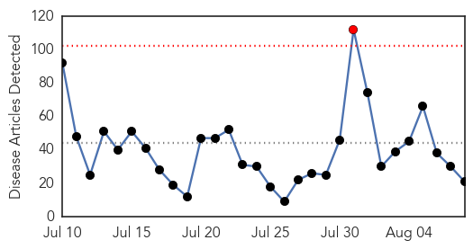

Ebola
30-Day Web Trend
1 alerts, 0 warnings

30-Day Twitter Trend
0 alerts, 0 warnings

Article Locations

Article Confidences

Top Articles:
- 1.000
- Scientist made remarkable progress in Ebola Vaccine
- 0.999
- Ebola: 'Detective work' is key to ending epidemic once and for all
- 0.997
- Tracking nature’s evils – human diseases – BorneoPost Online
- 0.995
- 'An emergency within an emergency'
- 0.991
- Ebola Survivors Struggle as Epidemic Wanes
- 0.990
- Sierra Leone Eases Restrictions as Ebola Danger 'Recedes'
- 0.990
- Sierra Leone eases restrictions as Ebola danger 'recedes' - Sierra Leone
- 0.988
- Ebola survivors suffering horrendous effects
- 0.986
- LIBERIA: Ellen Optimistic About Liberia’s Ability To Contain Ebola
- 0.983
- Ebola survivor meeting explores research priorities, 'biobanking'
- 0.968
- US Military planes arrive at Ebola hot zone
- 0.966
- Severe Pain, Blindness, and Suffering
- 0.964
- United States Announces Additional Results in Grand Challenge to Fight Ebola
- 0.944
- CDC's top modeler makes estimates and courts controversy
- 0.943
- Gambia bans flights from Ebola-hit nations
- 0.932
- Zonal Ebola response teams
- 0.893
- Local Hajj Pilgrims to Be Regularly Monitored for MERS & Ebola
- 0.885
- Statement from USAID Administrator, Rajiv Shah on the Ebola Response Transition
- 0.883
- Legionnaires’ Disease Outbreak Is Waning, New York Health Official Says
- 0.852
- An Ebolavirus Vaccine in Africa
- 0.773
- Chinese FM to visit Ebola-affected countries
Top Tweets:
- 0.988
- Sierra Leone Eases Restrictions as Ebola Danger 'Recedes' - NDTV http://t.co/Qxl2QNV8X3 ebola EVD
- 0.984
- Sierra Leone eases restrictions as Ebola danger 'recedes' - Times LIVE http://t.co/MCwGmaQQTe ebola EVD
- 0.982
- Namicit Nanshall: Salt Rumours & the Ebola Pandemic - Bella Naija http://t.co/dvh1xrVwbU ebola EVD
- 0.982
- Namicit Nanshall: Salt Rumours & the Ebola Pandemic - Bella Naija http://t.co/NhTYgSFVLj ebola EVD
- 0.969
- Is there a new Ebola outbreak in Kisingani, DR Congo? Perhaps. Health officials in DRC have deep experience w/ Ebola http://t.co/TIgkT5oxUt
- 0.899
- RT: 'post-Ebola syndrome' or simply chronic Ebola virus disease? Some thoughts at VirolDU... http://t.co/tzU7RxeXW5 http://t.co…
- 0.897
- Ebola Survivors Struggle as Epidemic Wanes - Voice of America http://t.co/FfnseO02Aw ebola EVD
- 0.841
- Today is the 1st anniversary of Ebola being declared an 'international epidemic' - AOL News http://t.co/qXR4WuSygM ebola EVD
- 0.833
- Sierra Leone Eases Restrictions as Ebola Danger 'Recedes' - NDTV http://t.co/xGeiuRE2aT
- 0.808
- RT: When someone survives Ebola we celebrate. Surviving Ebola marks also a long hard road to regain health.SierraLeone ht…
- 0.803
- Sierra Leone eases restrictions as Ebola danger 'recedes' - Times LIVE http://t.co/Dvlr7Epybv
- 0.655
- While you worried about Ebola, the Plague struck - The Detroit News http://t.co/Zbkp7OPTXF ebola EVD
- 0.558
- Texas Reads: Brantleys tell story of their ebola ordeal - Bryan-College Station Eagle http://t.co/IH60fhaEs0 ebola EVD
Unknown
30-Day Web Trend
0 alerts, 0 warnings

30-Day Twitter Trend
0 alerts, 0 warnings

Article Locations

Article Confidences

Top Articles:
- 0.997
- Tests show South Korean in Slovakia probably does not have Mers
- 0.994
- NYC Legionnaires' Disease Outbreak May Be Slowing
- 0.987
- Officials Warn About Cyclospora Outbreak in Canada
- 0.959
- Health teams sent to test NYC for bacterial outbreak that's killed 10
- 0.959
- Health teams sent to test NYC for bacterial outbreak that's killed 10
- 0.959
- New York City Legionnaire's Disease Outbreak, Symptoms and Treatment: Outbreak kills 10 in Bronx, 100 Infected
- 0.942
- Health officials search for source of Legionnaires' disease in NE Ohio after death
- 0.938
- NYC deploys teams to test for Legionnaires
- 0.917
- Chicago Tribune
- 0.917
- Chicago Tribune
- 0.917
- Chicago Tribune
- 0.917
- Chicago Tribune
- 0.917
- Chicago Tribune
- 0.917
- Chicago Tribune
- 0.916
- Are you prone to deadly Shingles?
- 0.910
- UPDATE: Danville hospital locks down emergency room as it evaluates patient
- 0.902
- Two Die of Mad Cow Disease in Italy
- 0.902
- Two More Fatalities In New York City Legionnaires' Outbreak, No New Cases Reported
- 0.893
- Ministry takes precautionary measures against new virus
- 0.891
- N.Y. officials to test South Bronx areas for Legionnaires'
- 0.890
- New York City outbreak of Legionnaire’s easing
- 0.888
- Over 400 hospitalised with diarrhoea in Kolkata
- 0.887
- New York governor taking action after deadly illness
- 0.876
- NYC health officials get handle on Legionnaires' Disease outbreak
- 0.863
- WCAX.COM Local Vermont News, Weather and Sports-
- 0.835
- New plague death confirmed in Colorado - KTVQ.com
- 0.829
- The Post
- 0.813
- DNR Confirms 3rd Case Of Chronic Wasting Disease In Deer; Hunter Participation ‘Critical’ This Fall « CBS Detroit
- 0.811
- Emergence of fatal horse disease cause for concern in P.A.
- 0.802
- New York Governor Cuomo announces State Department of Health to provide free Legionella testing
- 0.798
- Outbreak Of Cyclospora Under Investigation
- 0.790
- Doctors have to now watch out for ‘less fatal’ strain of malaria too
- 0.779
- Rare cat virus not seen in 30 years
- 0.773
- Cyclospora in Canada: PHAC and CFIA investigate
- 0.772
- Colorado resident is 2nd to die of plague there this year
- 0.727
- Girl contracts the plague in Yosemite
- 0.706
- Contaminated cilantro causes gastrointestinal illness outbreak in the U.S.
- 0.693
- DOH validating reports of 'mysterious' illness downing 70 people in Bukidnon
- 0.681
- Child Contracts Plague after Yosemite Trip
- 0.677
- French couple die in US desert, nine-year-old son rescued
- 0.677
- Rwandan peacekeepers killed in shooting in Central African Republic
- 0.672
- 3 more ways hospitals and clinicians can improve health literacy
- 0.658
- California child diagnosed with plague
- 0.655
- Bulgarian authorities should provide preventive measures for diseases like anthrax
- 0.652
- Johns Hopkins looks to computer code to identify sepsis
- 0.641
- Funding Shortfall ‘Cripples Humanitarian Operations’
- 0.607
- Shellbrook hospital access restricted due to outbreak
- 0.607
- ICYMI: Source of Buckhead Parasite Discovered
- 0.583
- One Eleuthera Foundation Hosts 4th Annual Pathway to Wellness Symposium
- 0.582
- Legionnaires' disease in the Bronx alerts NYC
Showing top 50 articles...
Top Tweets:
- 0.736
- RT: Législatives en Haiti : "nous espérons un taux de participation de 20%", Castillo Barrantes, chef mission observation éle…
- 0.590
- Saudis report +3 MERS cases in Riyadh. They've reported 12 cases there this week. Clearly there is an outbreak. 1/2 http://t.co/6eW2QUPC4O